The expectation of a random variable  with
with
 is
is
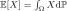
; such an is integrable. For 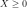
the expectation is defined in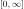
with no integrability assumed.
Let be a random variable with law  and
and
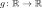
Borel measurable with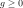
, or with integrable. Then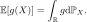
For
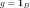
with Borel, the left side is
Borel, the left side is
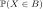
and the right side is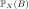
, equal by definition of the law. By linearity of both integrals the identity holds for every non-negative simple . For general , take
simple
. For general , take
simple 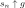
; then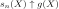
, and monotone convergence applied on each side gives the identity in the limit.For integrable , apply the non-negative case to
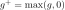
and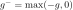
, both finite, and subtract.Expectation is linear and monotone on integrable random variables,
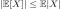
, and a constant has itself as expectation. If almost surely with
almost surely with 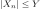
integrable, then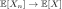
.
Each statement is the corresponding property of the integral, applied on
the measure space  ; the last is dominated
convergence, and follows from monotonicity
applied to
; the last is dominated
convergence, and follows from monotonicity
applied to
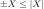
. A constant has
has
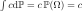
.
If and
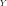
are independent and both integrable, then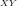
is integrable and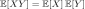
.Assume first
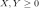
. For the pair and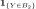
with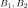
Borel, the claim is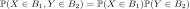
, which is the definition of independence. By bilinearity it holds for any pair of non-negative simple functions of and of , each
being a finite combination of such indicators. Take simple and
of the form 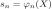
,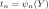
– the approximation theorem produces exactly such functions, being built from the level sets of and . Then
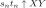
, and monotone convergence on both sides gives in .In general apply this to
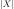
and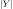
, which are independent by the proposition on functions of independent variables; the product of their finite expectations bounds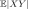
, so is integrable. Splitting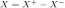
and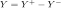
into four independent non-negative pairs and expanding by linearity gives the identity.Let
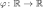
be convex and integrable with
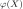
integrable. Then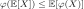
.Put . Convexity makes the difference quotient
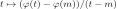
non-decreasing on each side of , so
, so
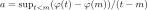
is finite and is at most every quotient with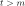
. Hence the line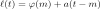
satisfies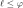
everywhere – for because is below the quotient, for
is below the quotient, for
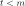
because is above it and the denominator is negative, and
at 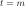
with equality.Applying monotonicity of expectation to
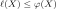
and linearity gives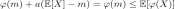
.
The transfer theorem is what makes the underlying probability space
disappear from every computation: after it, an expectation is an
integral against a measure on  , and two random variables with the
same law are interchangeable in every formula. Jensen's inequality is
the reason variance, entropy and the moment inequalities all point the
same way.
, and two random variables with the
same law are interchangeable in every formula. Jensen's inequality is
the reason variance, entropy and the moment inequalities all point the
same way.